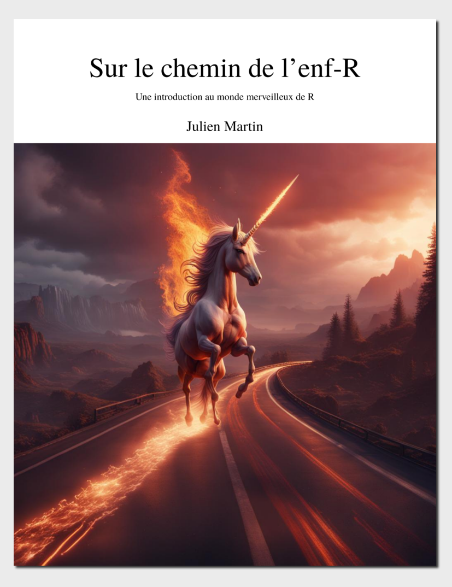

Sur le chemin de l’enf-R
Une introduction au monde merveilleux de R
Préface

Première version en cours de traduction. Pas encore revue par un humain
L’objectif de ce livre
L’objectif de ce livre est de te présenter R, un environnement interactif puissant et flexible pour le calcul et la recherche statistiques. R n’est pas difficile à apprendre en soi, mais comme pour l’apprentissage de toute nouvelle langue (parlée ou informatique), la courbe d’apprentissage initiale peut être abrupte et quelque peu décourageante. Il ne s’agit pas de tout couvrir, mais simplement de t’aider à gravir la courbe d’apprentissage initiale (potentiellement plus rapidement) et de te fournir les compétences de base (et la confiance !) nécessaires pour commencer ton propre voyage avec R.
Livre multilingue
Le livre est fourni comme un livre multilingue qui brise la barrière de la langue et permet potentiellement de faciliter l’apprentissage de R et de son environnement principalement anglophone. Nous sommes toujours à la recherche de bénévoles pour nous aider à développer le livre et à ajouter d’autres langues à la liste qui ne cesse de s’allonger . N’hésite pas à Contacte-nous si tu veux nous aider
Sur la page web, tu peux changer de langue via le dans la barre de navigation. Après avoir changer de langue, tu peux télécharger le document en pdf ou epub pour cet langue .
Liste des langues :
- anglais (publié mais à peaufiner)
- français (en développement, en attendant que l’anglais soit peaufiné)
- espagnol (en développement, en attendant que l’anglais soit peaufiné)
Qui sommes-nous ?
Julien Martin est professeur à l’Université d’Ottawa en Écologie évolutive. Il a découvert le merveilleux monde R avec la version 1.8.1 et l’enseigne depuis R v2.4.0.
Remerciements
Ce livre a commencé comme un fork sur github à partir de l’excellent An introduction to Rde Douglas, Roos, Mancini, Couto et Lusseau. (Douglas 2023). Il a été forké le 23 avril 2023 à partir de Dépôt github Alexd106 puis modifié et mis à jour en suivant mes propres besoins et ma perspective d’enseignement de R. Cela fait également partie d’un projet de livre R multilingue visant à améliorer l’équité et la diversité. Il a commencé par une traduction en français et a été/sera étendu à de nombreuses autres langues.
Licence
Je partage cette version modifiée du livre original sous la licence Licence Creative Commons Attribution-NonCommercial-ShareAlike 4.0 International.

Si tu enseignes R, n’hésite pas à utiliser tout ou partie du contenu de ce livre pour aider tes propres élèves. La seule chose que je te demande, c’est de citer la source originale et les auteurs. Si tu trouves ce livre utile ou si tu as des commentaires ou des suggestions, j’aimerais beaucoup que tu me les fasses parvenir (contact info).
Comment utiliser ce livre
Pour une meilleure expérience, nous te recommandons de lire la version web de ce livre que tu peux trouver à https://biostats-uottawa.github.io/R.
La version web inclut une barre de navigation incluant des options pour faciliter la lecture , de recherche , pour changer la couleur et pour suggérer des modifications ou reporter des problèmes . Tu peux aussi télécharger le document au format pdf ou epub.
Nous utilisons quelques conventions typographiques tout au long de ce livre.
Le code R et la sortie qui en résulte sont présentés dans des blocs de code dans notre livre.
Les fonctions dans le texte sont présentées avec des parenthèses à la fin en utilisant la police de code, c’est-à-dire
mean()ousd()etc.Les objets sont représentés à l’aide de la police de code sans les parenthèses, c’est-à-dire
obj1,obj2etc.Les paquets R dans le texte sont indiqués en utilisant la police de code et suivis de l’icone 📦, exemple
tidyverse📦.Une série d’actions nécessaires pour accéder aux commandes de menu dans RStudio ou VSCode sont identifiées comme suit
File->New File->R Scriptce qui se traduit par “clique sur le menu Fichier, puis clique sur Nouveau fichier et sélectionne R Script”.Lorsque nous faisons référence à IDE (Intégrée Ddéveloppement Environnement) dans la suite du texte, il s’agit de RStudio ou de VScode.
Lorsque nous parlons de .[Rq]md Nous entendons par là les documents R markdown (.Rmd) ou Quarto (.qmd) et nous parlerons généralement des documents R markdown en faisant référence à l’un ou l’autre des fichiers
.Rmdou.qmd.Le manuel tente de mettre en évidence certaines parties du texte à l’aide des encadrés et icônes suivants.
Des choses à faire pour toi
Code R et explications
avertissements
points importants
notes